deep-learning-for-computer-vision-with-python-practitioner
Table of Contents
- 1. DATA AUGMENTATION
- 2. NETWORKS AS FEATURE EXTRACTORS
- 3. UNDERSTANDING RANK-1 & RANK-5 ACCURACIES
- 4. FINE-TUNING NETWORK
- 5. IMPROVING ACCURACY WITH NETWORK ENSEMBLES
- 6. ADVANCED OPTIMIZATION METHODS
- 7. OPTIMAL PATHWAY TO APPLY DEEP LEARNING
- 8. WROKING WITH HDF5 AND LARGE DATASETS
- 9. Competing in Kaggle: Dogs vs Cats
- 10. GOOGLENET
- 11. ResNet
1 DATA AUGMENTATION
1.1 What is Data Augmentation?
Data augmentation encompasses a wide range of techniques used to generate new training samples from the original ones by applying random jitters and perturbations such that the classes labels are not changed.
In the context of computer vision, data augmentation lends itself naturally.
For example, we can obtain additional training data from the original images by apply geometric transforms such as random:
- Translations
- Rotations
- Changes in scale
- Shearing
- Horizontal (and in some cases, vertical) flips
- Random perturbation of color in a given color space
- Nonlinear geometric distrotions
1.2 Visualizing Data Augmentation
The best way to understand data augmentation applied to computer tasks is to simply visualize a given input being augmented and distorted.
1.3 Aspect ratio
Maintaining a consistent aspect ratio allows our convolutional neural netowrk to learn more discriminative, consistent feature.
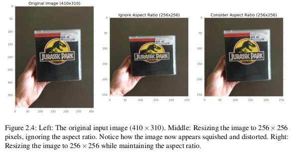
1.4 Summary
While it’s always better to gather "natural" training samples, in a pinch, data augmentation can be used to overcome small dataset limitations. When it comes to your own experiments, you should apply data augmentation to nearly every experiment you run.
2 NETWORKS AS FEATURE EXTRACTORS
Consider a traditional machine learning scenario where we are given two classification challenges.
In the first challenge, our goal is to train a Convolutional Neural Network to recognize dogs vs. cats in an image. Then, in the second project, we are tasked with recognizing three separate species of bears: grizzly bears, polar bears, and giant pandas.
Using standard practices in machine learning, neural networks, and deep learning, we would treat these these challenges as two separate problems. First, we would gather a sufficient labeled dataset of dogs and cats, followed by training a model on the dataset. We would then repeat the process a second time, only this time, gathering images of our bear breeds, and then training a model on top of the labeled bear dataset.
Transfer learning proposes a different training paradigm – what if we could use an existing pre-trained classifier and use it as a starting point for a new classification task? In context of the proposed challenges above, we would first train a Convolutional Neural Network to recognize dogs versus cats. Then, we would use the same CNN trained on dog and cat data to be used to distinguish between bear classes, even though no bear data was mixed with the dog and cat data.
In general, there are two types of transfer learning:
- Treating networks as arbitrary feature extractors.
- Removing the fully-connected layers of an existing network, placing new FC layer set on top of the CNN, and fine-tuning these weights (and optionally previous layers) to recognize object classes.
Keep in mind that the CNN itself is not capable of recognizing the new classes – instead, we are using the CNN as an intermediary feature extractor. The downstream machine learning classifier will take care of learning the underlying patterns of the features extracted from the CNN.
2.1 HDF5
HDF5 is binary data format created by the HDF5 group to store gigantic numerical datasets on disk (far too large to store in memory) while facilitating easy access and computation on the rows of the datasets.
Data in HDF5 is stored hierarchically, similar to how a file system stores data. Data is first defined in groups, where a group is a container-like structure which can hold datasets and other groups. A dataset can be thought of as a multi-dimensional array (i.e., a NumPy array) of a homogeneous data type (integer, float, unicode, etc.).
HDF5 is written in C; however, by using the h5py module, we can gain access to the underlying C API using the Python programming language. When using HDF5 with h5py, you can think of your data as a gigantic NumPy array that is too large to fit into main memory but can still be accessed and manipulated just the same.
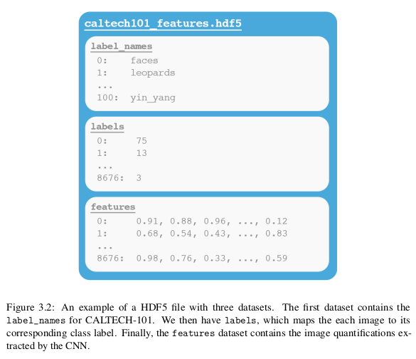
As you continue in your deep learning career, you’ll notice that much of the initial labor when setting up a new problem is getting the data into a format you can work with. Once you have your data in a format that’s straightforward to manipulate, it becomes substantially easier to apply machine learning and deep learning techniques to your data.
2.2 Summary
Whenever approaching a new problem with deep learning and Convolutional Neural Networks, always consider if applying feature extraction will obtain reasonable accuracy – if so, you can skip the network training process entirely, saving you a ton of time, effort, and headache.
3 UNDERSTANDING RANK-1 & RANK-5 ACCURACIES
3.1 Ranked Accuracy
Rank-N accuracy:
- Step #1: Computing the class label probabiliteis for each image in the dataset.
- Step #2: Sort the predicted class label probabilites in descending order.
- Step #3: Determine the ground-truth label exists in the top-N predicted labels from Step #2.
- Step #4: Tally the number of times where Step #3 is true.
Why rank-1 and rank-5?
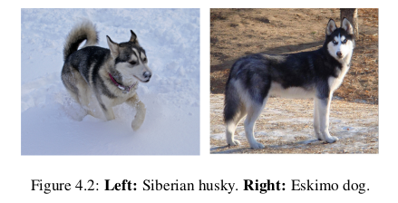
When working with large datasets that cover many class labels with similar characteristics, we often examine the rank-5 accuracy as an extension to the rank-1 accuracy to see how our network is performing. In an ideal world our rank-1 accuracy would increase at the same rate as our rank-5 accuracy, but on challenging datasets, this is not always the case.
Therefore, we examine the rank-5 accuracy as well to ensure that our network is still "learning" in later epochs. It may be the case where rank-1 accuracy stagnates towards the end of training, but rank-5 accuracy continues to improve as our network learns more discriminating features (but not discriminative enough to overtake the top #1 predictions). Finally, depending on the image classification challenge (ImageNet being the canonical example), you are required to report both your rank-1 and rank-5 accuracies together.
4 FINE-TUNING NETWORK
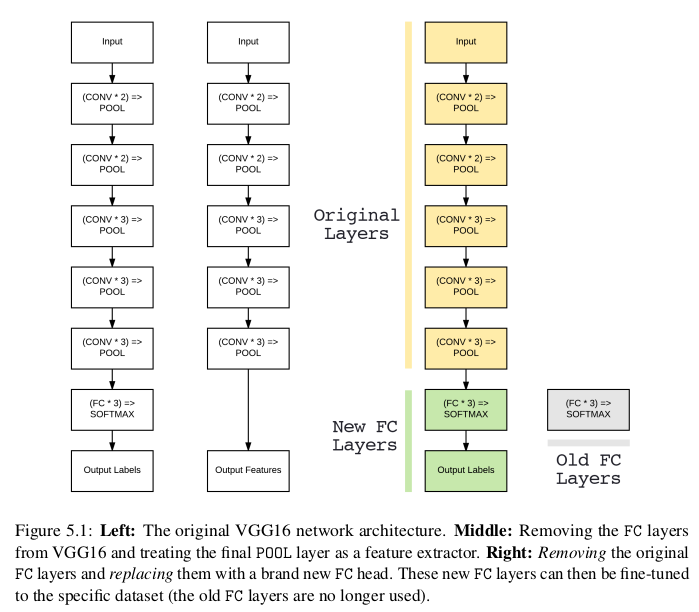
However, there is a problem – our CONV layers have already learned rich, discriminating filters while our FC layers are brand new and totally random. If we allow the gradient to backpropagate from these random values all the way through the body of our network, we risk destroying these powerful features. To circumvent this, we instead let our FC head "warm up" by (ironically) "freezing" all layers in the body of the network .
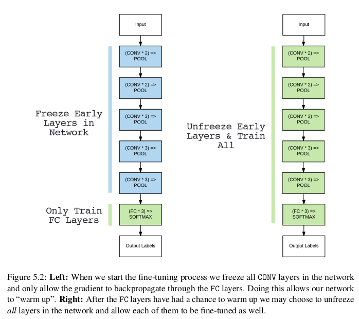
After the FC head has started to learn patterns in our dataset, pause training, unfreeze the body, and then continue the training, but with a very small learning rate – we do not want to deviate our CONV filters dramatically. Training is then allowed to continue until sufficient accuracy is obtained.
5 IMPROVING ACCURACY WITH NETWORK ENSEMBLES
The term "ensemble methods" generally refers to training a "large" number of models and then combining their output predictions via voting or averaging to yield an increase in classification accuracy.
It’s important to note that we would never jump straight to training an ensemble – we would first run a series of experiments to determine which combination of architecture, optimizer, and hyperparameters yields the highest accuracy on a given dataset.
6 ADVANCED OPTIMIZATION METHODS
According to the learning rate, there are two kinds of optimization algorithm:
- fixed learning rate
- SGD
- momentum
- Nesterov momentum
- SGD
- adaptive learning rate
- adagrad
- adadelta
- RMSprop
- adam
- adagrad
6.1 Choosing an Optimization Method
Given the choices between all of these optimization algorithms, which one should you choose?
Unfortunately, the answer is highly inconclusive. While adaptive learning rate algorithms performed favorably, there was no clear winner.
Deep learning optimization algorithms (and how to choose them) is still an open area of research, and will likely continue to be for many years. Therefore, instead of exhaustively trying every optimization algorithm you can find, throwing each at your dataset and noting what sticks, it’s better to master two or three optimization algorithms. Often, the success of a deep learning project is a combination of the optimization algorithm (and associated parameters) along with how adept the researcher is at "driving" the algorithm.
Two Methods You Should Learn How to Drive: SGD and Adam.
The more experiments we perform with a given architecture and optimization algorithm, the more we learn about the intricacies of the training process.
6.2 Summary
Instead of exhaustively running experiments to try every optimization algorithm you can find, it’s instead better to master two or three techniques and how to tune their hyperparameters. Becoming an expert at these techniques will enable you to apply new model architectures to datasets you haven’t worked with before with much more ease.
7 OPTIMAL PATHWAY TO APPLY DEEP LEARNING
As you’ll find out in your deep learning career, arguably the hardest aspect of deep learning is examining your accuracy/loss curve and making the decision on what to do next.
7.1 A Precipe for Training
Most issues in applied deep learning come from training data/testing data mismatch. In some scenarios this issue just doesn’t come up, but you’d be surprised how often applied machine learning projects use training data (which is easy to collect and annotate) that is different from the target application. – Andrew Ng (summarized by Malisiewicz)

There is no shortcut to building your own image dataset. If you expect a deep learning system to obtain high accuracy in a given real-world situation, then make sure this deep learning system was trained on images representative of where it will be deployed – otherwise you will be very disappointed in its performance.
After sufficient training data that is representative are gathered, then:
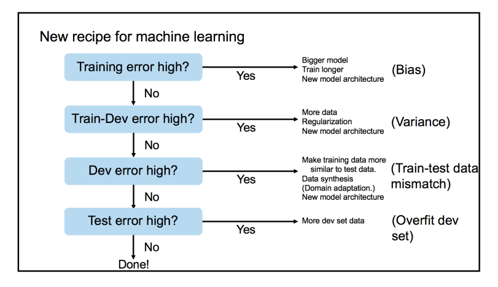
Based on the above figure, Ng is proposing four sets of data splits when training a deep learning model:
- Training
- Training-validation (also known as "development")
- Validation
- Testing
"training-validation" set:
From our training set, we take a small chunk of it and add it to our "training-validation set".
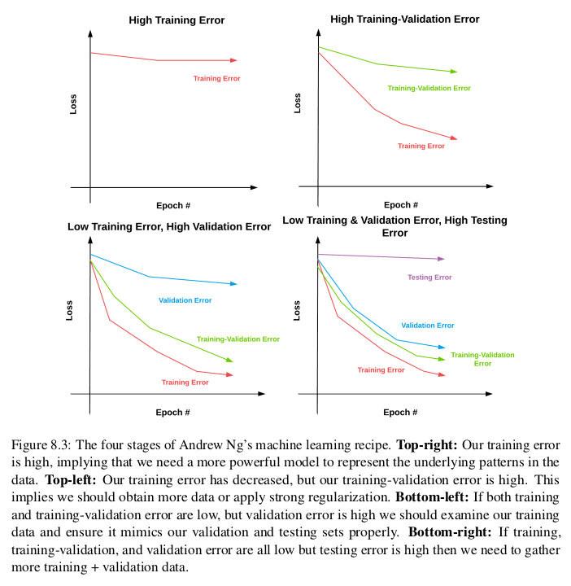
7.2 Transfer Learning or Train from Scratch
To make this decision, you need to consider two important factors:
- The size of your dataset.
- The similarity of your dataset to the dataset the pre-trained CNN was trained on (which is typically ImageNet).
| Similar Dataset | Different Dataset | |
|---|---|---|
| Small Dataset | Feature extraction using deeper | Feature extraction using lower |
| level CONV layers + classifier | level CONV layers + classifier | |
| Large Dataset | Fine-tuning likely to work, | Fine-tuning worth trying, but will likeyly not work; |
| but might have to train from scratch | likely have to train from scratch |
8 WROKING WITH HDF5 AND LARGE DATASETS
For small datasets – we simply load each individual image, preprocess it, and allow it to be fed through our network. However, for large scale deep learning datasets, we need to create data generators that access only a portion of the dataset at a time (i.e., a mini-batch), then allow the batch to be passed through the network.
Luckily, Keras ships with methods that allow you to use the raw file paths on disk as inputs to a training process. You do not have to store the entire dataset in memory – simply supply the image paths to the Keras data generator and your images will be loaded in batches and fed through the network. However, this method is terribly inefficient. Each and every image residing on your disk requires an I/O operation which introduces latency into your training pipeline. Training deep learning networks is already slow enough – we would do well to avoid the I/O bottleneck as much as possible.
A elegant solution would be to generate an HDF5 dataset for your raw images. Not only is HDF5 capable of storing massive datasets, but it’s optimized for I/O operations, especially for extracting batches (called "slices") from the file. Taking the extra step to pack the raw images residing on disk into an HDF5 file allows us to construct a deep learning framework that can be used to rapidly build datasets and train deep learning networks on top of them.
8.1 Creating a Configuration File
Using a Python file rather than a JSON file allows me to include snippets of Python code and makes the configuration file more efficient to work with.
I suggest you get into the habit of using Python-based configuration files for your own deep learning projects as it will greatly improve your productivity and allow you to control most of the parameters in your project through a single file.
8.2 Summary
596M train/ 3.7G hdf5/test.hdf5 30G hdf5/train.hdf5 3.7G hdf5/val.hdf5
Keep in mind that raw image file formats such as JPEG and PNG apply data compression algorithms to keep image file sizes small. However, we have effectively removed any type of compression and are storing the images as raw NumPy arrays (i.e., bitmaps). This lack of compression dramatically inflates our storage costs, but will also help speed up our training time as we won’t have to waste processor time decoding the image – we can instead access the image directly from the HDF5 dataset, preprocess it, and pass it through our network.
Keep in mind that being a deep learning practitioner isn’t about implementing Convolutional Neural Networks and training them from scratch. Part of being a deep learning practitioner involves using your programming skills to build simple scripts that can parse data. The more general purpose programming skills you have, the better deep learning practitioner you can become – while other deep learning researchers are struggling to organize files on disk or understand how a dataset is structured, you’ll have already converted your entire dataset to a format suitable for training a CNN.
9 Competing in Kaggle: Dogs vs Cats
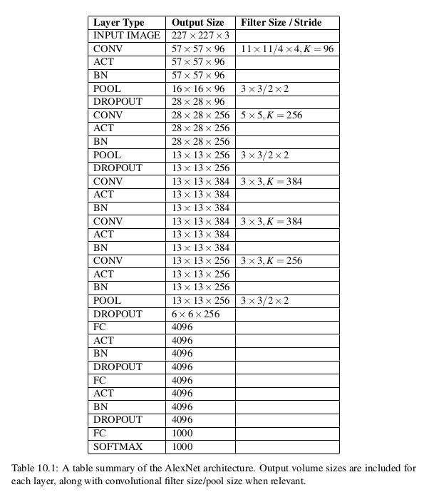
10 GOOGLENET
The GoogLeNet architecture, introduced by Szegedy et al. in their 2014 paper, "Going Deeper With Convolutions".
This paper is important for two reasons:
- the model architecture is tiny compared to AlexNet and VGGNet (about 28MB for the weights themselves). (by remove FC layers and instead using global average pooling).
- a network in network or micro-architecutre when constructing the overall macro-architecture.
Szegedy et al. contributed the *Inception module*. Micro-architectures such as Inception have inspired other important variants including the Residual module in ResNet and the Fire module in SqueezeNet.
10.1 The Inception Module (and its Variants)
Modern state-of-the-art Convolutional Neural Networks utilize micro-architectures. Micro-architectures are small building blocks designed by deep learning practitioners to enable networks to learn (1) faster and (2) more efficiently, all while increasing network depth. These micro-architecture building blocks are stacked, along with conventional layer types such as CONV, POOL, etc., to form the overall macro-architecture.
The general idea behind the Inception module is two-fold: 1. It can be hard to decide the size of the filter you need to learn at a given CONV layers. Should they be 5 × 5 filters? What about 3 × 3 filters? Should we learn local features using 1 × 1 filters? Instead, why not learn them all and let the model decide? Inside the Inception module, we learn all three 5 × 5, 3 × 3, and 1 × 1 filters (computing them in parallel) concatenating the resulting feature maps along the channel dimension. The next layer in the GoogLeNet architecture (which could be another Inception module) receives these concatenated, mixed filters and performs the same process. Taken as a whole, this process enables GoogLeNet to learn both local features via smaller convolutions and abstracted features with larger convolutions – we don’t have to sacrifice our level of abstraction at the expense of smaller features. 2. By learning multiple filter sizes, we can turn the module into a multi-level feature extractor. The 5 × 5 filters have a larger receptive size and can learn more abstract features. The 1 × 1 filters are by definition local. The 3 × 3 filters sit as a balance in between.
10.1.1 Inception
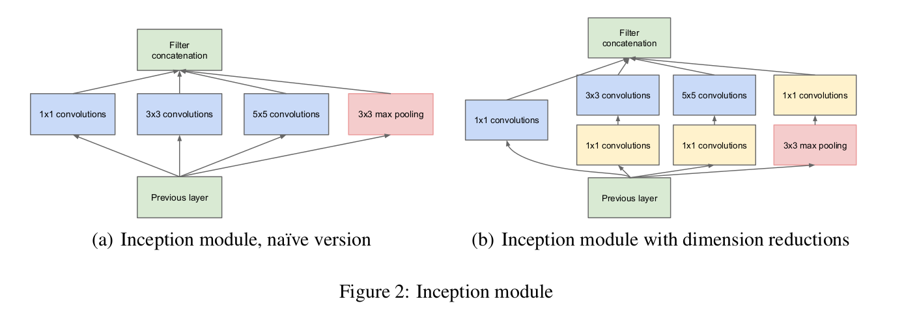
10.1.2 Miniception
"Understanding Deep Learning Requires Re-Thinking Generalization"
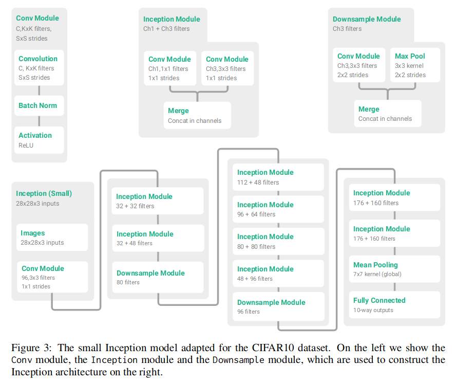
10.2 Deeper GoogLeNet Variant on Tiny ImageNet-200
Original GoogLeNet:
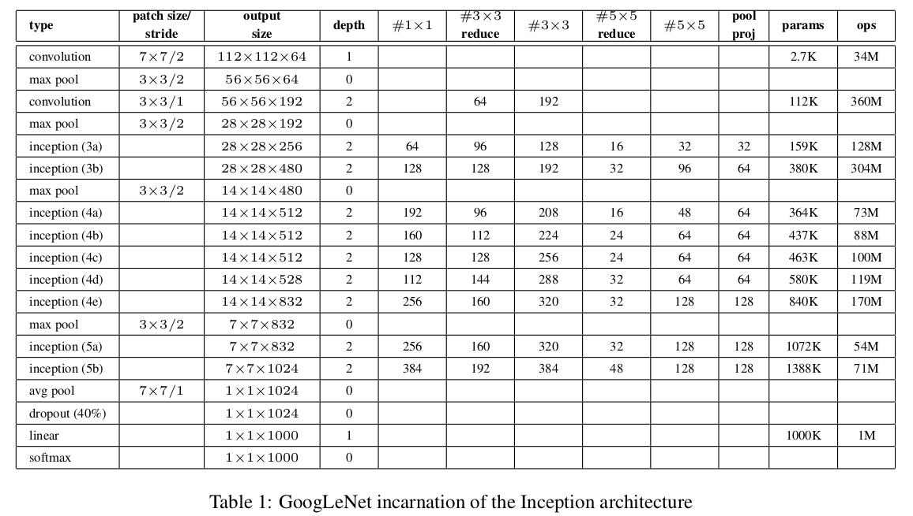
Variant:
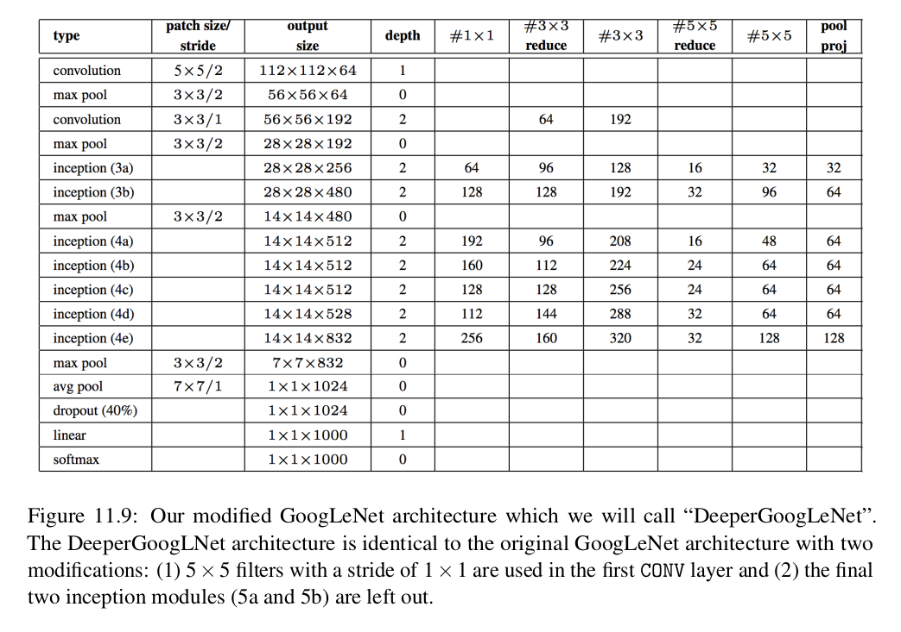
The first convlution is shoud be 5x5/1 avg pool is 4x4/1
For two reasons:
- The image is 64x64 instead of 224x224
- enought for performing well on Tiny ImageNet
11 ResNet
ResNet uses what's called a residual module to train CNN to depths previously thought impossible.
11.1 ResNet and the Residual Module
First introduced by He et al. in their 2015 paper, Deep Residual Learning for Image Recognition, the ResNet architecture has become a seminal work, demonstrating that extremely deep networks can be trained using standard SGD and a reasonable initialization function. In order to train networks at depths greater than 50-100 (and in some cases, 1,000) layers, ResNet relies on a micro-architecture called the residual module.
The original residual module relies on identity mappings, the process of taking the original input to the module and adding it to the output of a series of operations.
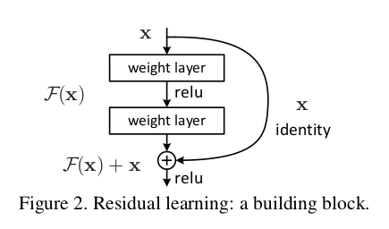
He et al. suggested adding the original input to the output of the CONV, RELU and BN layers. We call this addition an identity mapping since the input (the identity) is added to the output of series of operations. It is also why the term "residual" is used. The "residual" input is added to the output of a series of layer operations.
While traditional neural network layers can be seen as learning a function \(y=f(x)\), a residual layer attempts to approximate \(y\) via \(f(x)=id(x)\) where id(x) is the identity function.
Furthermore, since the input is included in every residual module, it turns out the network can learn faster and with larger learning rates.
bottlenecks: an extension to the original residual module
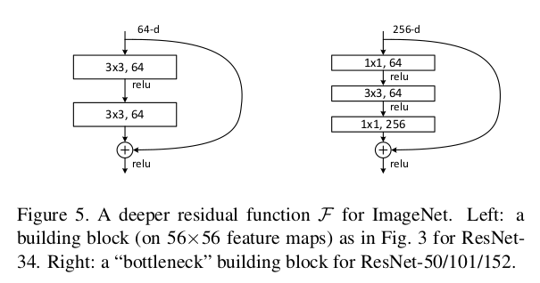
For the right, the input is 256-d, but during the flow, there is a bottleneck of 64-d, with the final output of 256-d.
Like the following:
| \ |
/
- -/
-/
X- –
-/
-/
-/
-/ \+
| \ | |
pre-activation residual module:
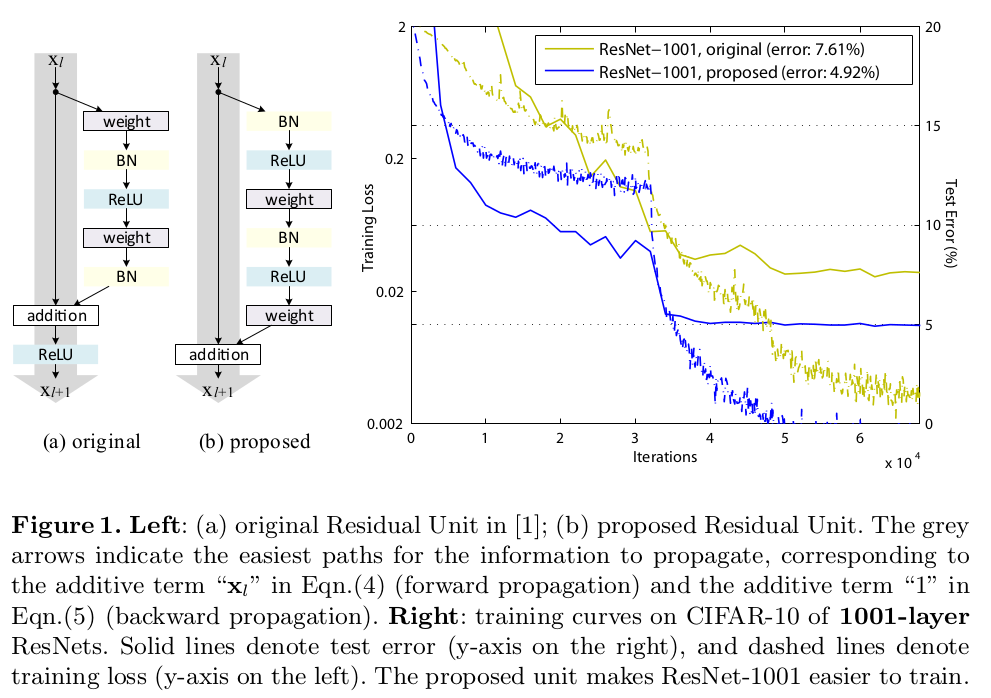
11.2 Practical Experience
Whenever I start a new set of experiments with either a network architecture I am unfamiliar with, a dataset I have never worked with, or both, I always begin with the ctrl-c mehtod of training. Using this method, I can start training with an initial learning rate (and associated set of hyperparameters), monitor training, and quickly adjust the learning rate based the results as they come in. This method is especially helpful when I am totoal unsure on the approximate number of epochs it will take for a give architeture to obtain reasonable accuracy or specific dataset.